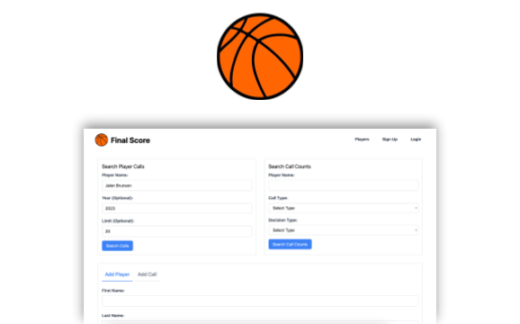
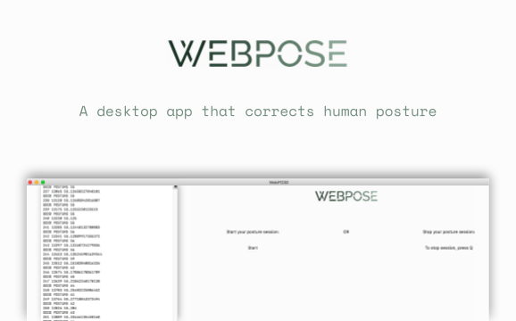
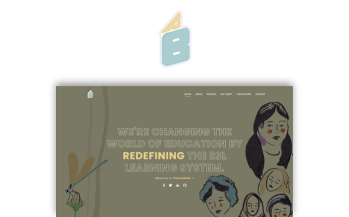
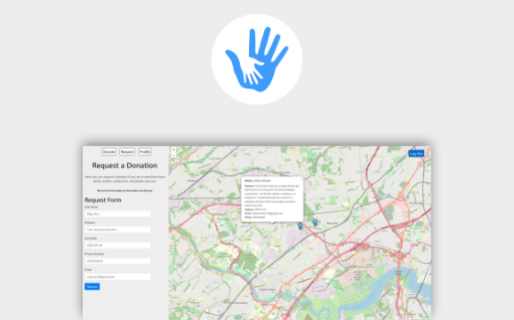

Hello,
my name
is Shivam
I'm a forward deployed engineer at Palantir
where I develop scalable, enterprise-grade full-stack applications to tackle some of the world's toughest problems. In my free time I like to work on small hack projects, like
Final Score.
experience.
Palantir Forward Deployed Engineer
AUG 2025 — PRESENT
Trying to forwardly deploy some code.
TypeScript
Python
OpenShift
K8s
Fresenius Kabi R&D Software Engineering Intern
MAY 2024 — AUG 2024
Creating automated Pareto visualizations for weekly complaint triage sprints using Visual Basic, to be used by Fresenius Kabi USA's executive quality assurance team. Porting the Ivenix Infusion System's UI platform to .NET 8 using C#.
.NET 8
C#
Razor
Selenium
Visual Basic
SQL Server
Jira
TeamCity
Rovier Chief Technology Officer
JUNE 2023 — MAY 2025
Cut buyer and supplier costs by upwards of 30% while leading development on an Express-based web application and network for conducting efficient B2B electronic procurement using novel mathematical optimization with BARON. Optimized query performance by 12% by reformatting the core data schema using PostgreSQL and Amazon RDS. Authored revised Git version control practices, scrum work cycles, and an Agile development framework.
AWS
RDBMS
PostgreSQL
TypeScript
React
Node.js
AR Quants Quantitative Developer
JAN 2023 — AUG 2023
Designed and delivered the MVP for pivotal investor pitches on India’s premiere AI-driven, no-code options backtesting platform with React, C++ and Molybden, which contributed to a 40% increase in investment inquiries. Executed weekly workstreams ranging from bull/bear market data analysis, European options trading algorithm backtesting, and utilizing Matplotlib for data audits and pre-visualization of company strategy decisions.
Python
Matplotlib
Django
JavaScript
CyberGIS Center [UIUC] Software Developer
OCT 2022 — AUG 2023
Designed and implemented a new responsive landing page for I-GUIDE using Figma, React.js and Tailwind. Built a Jupyter Notebook plugin to auto-upload user GitHub repositories from our CyberGISX platform using JavaScript, REST API, and MySQL. Improved code upload efficiency by 233%.
React
Tailwind
MySQL
JavaScript
REST API
JSON
Figma
Jupyter Notebook
MIT ML Research Assistant
NOV 2021 — JUNE 2022
Co-developed novel low-resolution image discernibility analysis methods with Dr. Kyle Keane. Implemented renewed G-code interfaces for Arduino systems. Proposed cGAN-based techniques for improved image pre-processing results, currently being used to develop a tactile device for people with visual impairments.
Python
C++
C
Tensorflow
G-code
Arduino
Stanford University ML Research Assistant
JUNE 2021 — JAN 2022
Selected as 1/54 interns nationwide for the SHTEM Summer Internship Program. Led the Machine Learning Team. Used Python to develop an augmented byte-pair encoding (ABPE) algorithm for 17% faster text tokenization in NLP applications. Annotated a 40,000+ token dictionary datasets, and tested multilingual tokenizers (BERT, WordPiece, etc). Research was published in the Stanford Compression Forum Journal and recognized at the SCCUR 2021.
Python
Julia
LaTeX
NLTK
BERT
WordPiece
GPT-2
MKDS Consulting Business Consultant
OCT 2019 — JUNE 2020
Consolidated over 15 multi-state political research portfolios on various energy sector lobbying policies in PowerPoint slide decks. Conducted data analysis and market research in the international energy sector, and presented recommendations to Mitsibushi Hitachi Power Systems company executives. Followed biweekly deadlines, interacted with senior analysts, and was trusted with numerous solo projects.
PowerPoint
MS Office
Research
projects.




Final Score
My friends and I are huge basketball fans, so we built a Next-based web app to visualize the NBA's Last Two Minute refereeing data for statistical fouling data insights.
Next.js
Node.js
MySQL
TypeScript
Google Cloud Platform
Vocabify
A Next-based web app that creates flashcards to review complex, polysyllabic words from online lecture material using AI.
Next.js
Node.js
OpenAI API
JSON
Gaxios
WebPOSE
A desktop app for correcting your posture and potentially preventing osteoarthritis. Using a Faster R-CNN, WebPOSE provides position changes when you're maintaining poor posture. Top 5 @ NJ JSHS 2021.
Python
Keras
OpenCV
TKinter
PictureBook
A Chrome extension that translate Google Meet's CC to provide closed-captions with image translation as well as applied review with flashcards. Helping early ESL learners effectively learn English.
HTML
JavaScript
SCSS
JSON
Good Neighbor
A web app which uses crowdsourcing to connet people to people. It allows person-to-person donations for food, clothes and other goods.
Python
React.js
REST API
Django
SQLite
Axios
Leaflet
Say hello 👋
If you have a question, or just want say hi, my inbox is always open. I'll try my best to get back to you!
Shoot me an email at reachshivamsyal [at] gmail [dot] com, or connect with me here, here or here.
Made with by Shivam Syal. Copyright 2023-26.